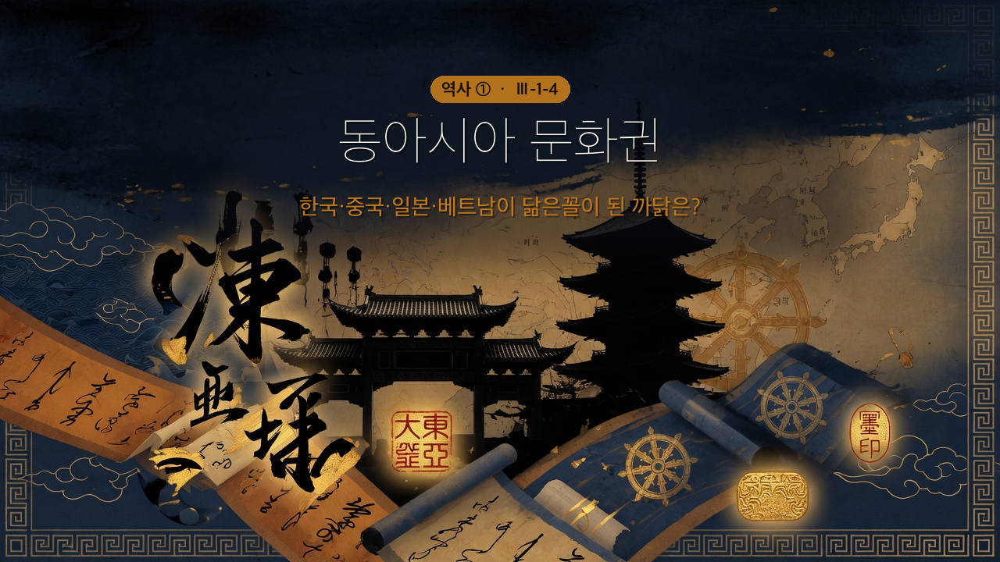

한국·중국·일본·베트남이 '닮은꼴'이 된 까닭은?

🎙️ 한국·중국·일본 거리 간판에는 비슷한 한자가 보이고, 세 나라 다 공자를 모시고, 비슷한 법으로 나라를 다스렸어. 마치 형제 같지? 이 '닮음'은 우연이 아니야. 당나라를 중심으로 활발히 교류하면서, 네 가지 문화 요소를 함께 나눴거든. 오늘 그 공유의 비밀을 풀어 보자.
- 동아시아 문화권이 형성된 배경을 설명할 수 있다.
- 동아시아 문화권이 공유하는 문화 요소를 살펴볼 수 있다.
| 단어 | 뜻 |
| 동아시아 문화권 | 한자·유교·율령·불교를 공유한 한국·중국·일본·베트남의 문화 묶음 |
| 율령 | 나라를 다스리는 법과 제도(형법 '율' + 행정법 '령') |
| 문묘 | 공자를 모시는 사당 — 유교를 가르치는 중심 |
| 이두·가나·쯔놈 | 한자를 빌려 만든 신라·일본·베트남의 글자 |
당의 세력이 강해지면서 한반도·일본·베트남 등 주변 지역과 당의 교류가 활발해졌다. 동아시아 국가의 ①·②·③ 등이 서로 오가는 과정에서 한자·유교·율령·불교 같은 문화 요소를 공유하는 ④이 형성되었다. 이들은 공통된 문화를 나누면서도 각국의 전통과 특성에 맞게 ⑤으로 발전시켰다.
(교과서 원문: "당의 세력이 강해지면서 한반도, 일본, 베트남 등 주변 지역과 당의 교류가 활발해졌다. 동아시아 국가의 사신, 유학생, 승려 등이 교류하는 과정에서 한자, 유교, 율령, 불교 등의 문화 요소를 공유하는 동아시아 문화권이 형성되었다. … 각국의 전통과 특성에 맞게 이를 독자적으로 발전시켜 나갔다." — 비상교육 역사①(이병인) p.74)
💡 문화를 나른 '세 부류': 나라를 대표한 ①사신, 공부하러 간 ②유학생, 불교를 배우러 간 ③승려. 이 사람들이 오가며 책·제도·신앙을 실어 날랐어. 사람의 이동이 곧 문화의 이동이었던 거지.
한자는 동아시아 국가들이 교류하는 데 필요한 ⑥ 수단이었다. 한자는 신라의 ⑦, 일본의 가나, 베트남의 쯔놈 문자가 만들어지는 데 큰 영향을 주었다.
(교과서 원문: "한자는 동아시아 국가들이 교류하는 데 필요한 의사소통 수단이었다. 한자는 신라의 이두, 일본의 가나, 베트남의 쯔놈 문자가 만들어지는 데 큰 영향을 주었다." — 비상교육 역사①(이병인) p.74)
🎙️ 한자는 동아시아의 '공용어'였어. 말은 서로 달라도 글로는 통했지. 게다가 각 나라는 한자를 빌려 자기 글자(이두·가나·쯔놈)를 만들었어 — 받아들이되 자기 식으로 바꾼 거야.
유교는 한대 이후 주변 여러 나라에 전해져 동아시아의 정치와 사회 이념으로 자리 잡았다. 유교는 왕의 권한을 뒷받침하고 ⑧를 유지하는 역할을 하였다. 동아시아 국가들은 공자를 모시는 ⑨를 세우고 학교에서 유교 경전을 가르쳤다.
(교과서 원문: "유교는 … 동아시아 지역의 정치와 사회 이념으로 자리 잡았다. 유교는 왕의 권한을 뒷받침하고, 사회 질서를 유지하는 역할을 하였다. … 공자를 모시는 문묘를 세우고, 학교에서 유교 경전을 가르쳤다." — 비상교육 역사①(이병인) p.74)
💡 왕들이 유교를 좋아한 이유: 유교는 위아래 질서와 충·효를 강조해. 왕 입장에선 내 권위를 떠받쳐 주는 고마운 이념이었지. 그래서 문묘를 세우고 학교에서 가르쳤어.
당대에 완성된 율령은 동아시아 여러 나라의 통치 체제를 세우는 데 기여하였다. 특히 신라·발해·일본은 당의 ⑩제를 본떠 통치 체제를 마련하였다.
(교과서 원문: "당대에 완성된 율령은 동아시아 여러 나라의 통치 체제를 세우는 데 기여하였다. 특히 신라, 발해, 일본은 당의 3성 6부제를 본떠 통치 체제를 마련하였다." — 비상교육 역사①(이병인) p.74)
⚠️ 여기가 핵심 — '제도 수출국' 당: 당의 율령(특히 3성 6부제)은 동아시아의 국가 운영 설명서였어. 발해의 정당성·일본의 태정관이 모두 당의 3성 6부를 본떴지. 같은 뼈대, 다른 이름인 셈.
당에 건너간 승려들을 통해 불교가 동아시아 여러 나라로 퍼졌다. 일본은 8세기 초 당의 장안성을 본떠 ⑪(나라)를 세우고, 당과 신라에서 들어온 불교문화로 ⑫를 비롯한 대규모 사찰을 많이 지었다.
(교과서 원문: "이후 동아시아 여러 나라의 승려들은 당에 건너가 불교를 공부하였어요. 이들을 통해 당의 문화가 동아시아 여러 나라로 퍼졌습니다." / "8세기 초 일본은 당의 장안성을 본떠 헤이조쿄(나라)를 세우고 … 도다이지를 비롯한 대규모 사찰을 많이 만들었다." — 비상교육 역사①(이병인) p.66·73)
🎙️ 불교는 국경을 넘는 신앙이었어. 승려들이 당으로 유학 가서 배워 오면, 그 나라에 절이 서고 불상이 만들어졌지. 일본 나라의 도다이지(세계 최대 목조 건축)가 그 증거야. 공유하되 각 나라 색깔로 꽃피운 거지.
| 번호 | 문장 | O/X |
| 1 | 동아시아 문화권의 공유 요소는 한자·유교·율령·불교이다. | |
| 2 | 한자는 신라의 이두, 일본의 가나가 만들어지는 데 영향을 주었다. | |
| 3 | 유교는 왕의 권한을 약화시키는 이념으로 받아들여졌다. | |
| 4 | 신라·발해·일본은 당의 3성 6부제를 본떠 통치 체제를 만들었다. | |
| 5 | 동아시아 국가들은 문화를 공유하기만 하고 독자적으로 발전시키지는 못했다. |
동아시아 나라들이 한자·유교·율령·불교를 '공유'하면서도 이두·가나, 국풍 문화처럼 저마다 다르게 발전시킨 까닭은 무엇일까? 한두 문장으로 써 보자.